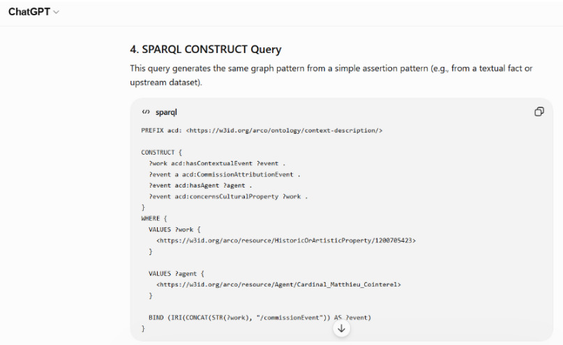
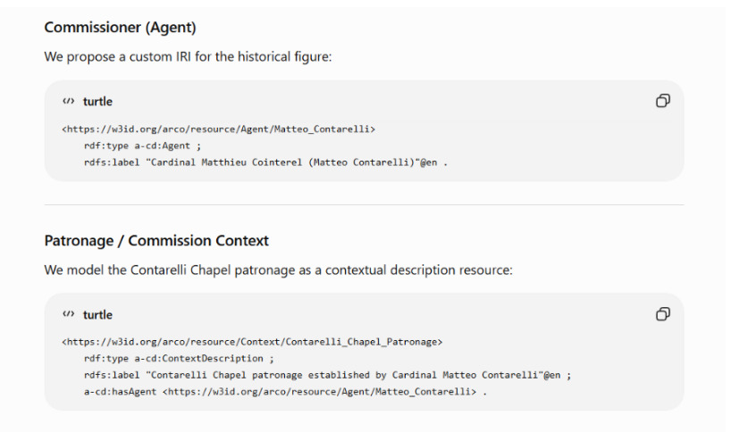
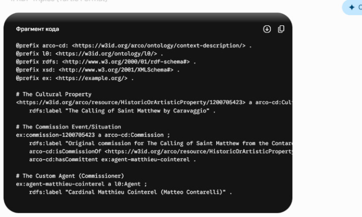
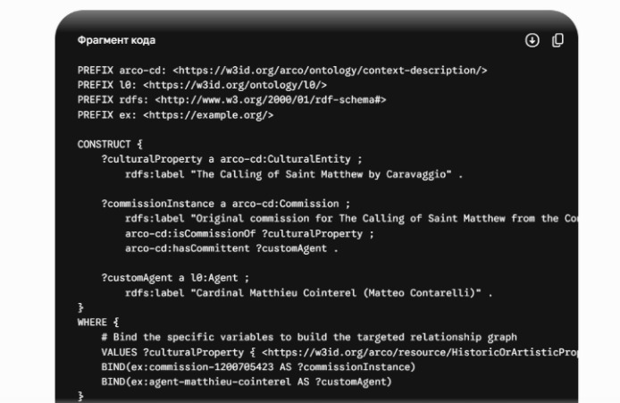
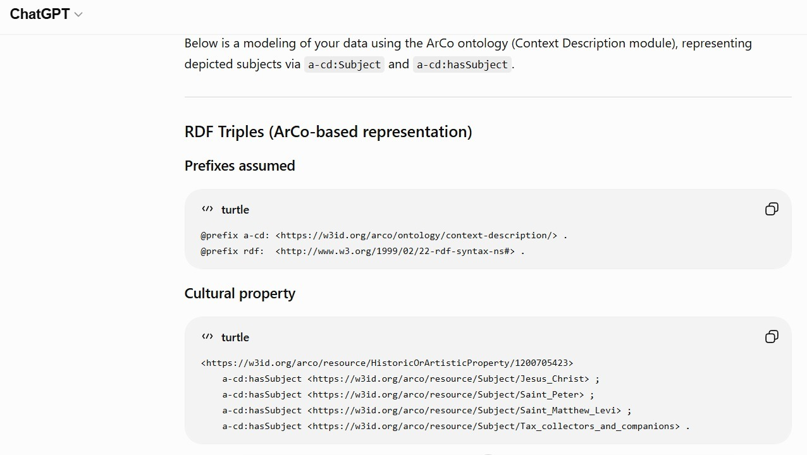
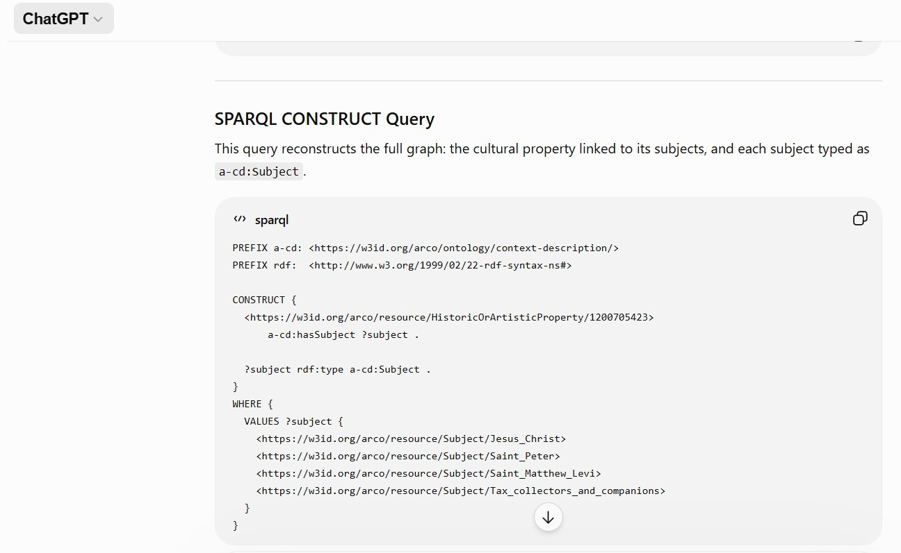

Michelangelo Merisi da Caravaggio (1599–1600)
Cultural property (Caravaggio, The Calling of Saint Matthew) https://w3id.org/arco/resource/HistoricOrArtisticProperty/1200705423 Proposed agent IRI (not in ArCo) We mint a stable URI for the patron: https://w3id.org/arco/resource/Agent/Cardinal_Matthieu_Cointerel
Since ArCo typically represents historical relations (like commissions, ownership, attribution) through the context-description module, we model the commission as a contextual event: Type: CommissionAttributionEvent (specialization of contextual event) Links: - cultural property → event - agent (patron) → event (as commissioner/patron) This avoids forcing a direct agent–work link and preserves provenance structure.
@prefix acd: <https://w3id.org/arco/ontology/context-description/> . @prefix a-cd: <https://w3id.org/arco/ontology/context-description/> . <https://w3id.org/arco/resource/HistoricOrArtisticProperty/1200705423> a-cd:hasContextualEvent _:commission_event_1 . _:commission_event_1 a a-cd:CommissionAttributionEvent ; a-cd:hasAgent <https://w3id.org/arco/resource/Agent/Cardinal_Matthieu_Cointerel> ; a-cd:concernsCulturalProperty <https://w3id.org/arco/resource/HistoricOrArtisticProperty/1200705423> .
This query generates the same graph pattern from a simple assertion pattern (e.g., from a textual fact or upstream dataset).
PREFIX acd: <https://w3id.org/arco/ontology/context-description/>
CONSTRUCT {
?work acd:hasContextualEvent ?event .
?event a acd:CommissionAttributionEvent .
?event acd:hasAgent ?agent .
?event acd:concernsCulturalProperty ?work .
}
WHERE {
VALUES ?work {
<https://w3id.org/arco/resource/HistoricOrArtisticProperty/1200705423>
}
VALUES ?agent {
<https://w3id.org/arco/resource/Agent/Cardinal_Matthieu_Cointerel>
}
BIND (IRI(CONCAT(STR(?work), "/commissionEvent")) AS ?event)
}
- The event-centric modeling aligns with ArCo’s emphasis on contextualized cultural heritage facts. - The agent is modeled as a patron/commissioner role via participation in the event rather than a direct property link. - The event URI is deterministically derived from the work URI to ensure reproducibility.


To accurately model this relationship using the ArCo (Architecture of Context) Ontologies, we need to rely on the context-description module (a-cd). As shown in the ontology documentation, ArCo represents commissioning as an n-ary relation through the class a-cd:Commission (which is a subclass of a-cd:Interpretation).
Let's break down the modeling strategy step by step.
Identify the Main Entities & IRIs:
Determine ArCo Properties:
Prefix Definition:
arco-mp: <https://w3id.org/arco/ontology/movable-property/> a-cd: <https://w3id.org/arco/ontology/context-description/> l0: <https://w3id.org/ontology/l0/>
@prefix arco-cd: <https://w3id.org/arco/ontology/context-description/> .
@prefix l0: <https://w3id.org/ontology/l0/> .
@prefix rdfs: <http://www.w3.org/2000/01/rdf-schema#> .
@prefix xsd: <http://www.w3.org/2001/XMLSchema#> .
@prefix ex: <https://example.org/> .
# The Cultural Property
<https://w3id.org/arco/resource/HistoricOrArtisticProperty/1200705423>
a arco-cd:CulturalEntity ;
rdfs:label "The Calling of Saint Matthew by Caravaggio" .
# The Commission Event/Situation
ex:commission-1200705423
a arco-cd:Commission ;
rdfs:label "Original commission for The Calling of Saint Matthew from the Contarelli Chapel patronage" ;
arco-cd:isCommissionOf <https://w3id.org/arco/resource/HistoricOrArtisticProperty/1200705423> ;
arco-cd:hasCommittent ex:agent-matthieu-cointerel .
# The Custom Agent (Commissioner)
ex:agent-matthieu-cointerel
a l0:Agent ;
rdfs:label "Cardinal Matthieu Cointerel (Matteo Contarelli)" .
PREFIX arco-cd: <https://w3id.org/arco/ontology/context-description/>
PREFIX l0: <https://w3id.org/ontology/l0/>
PREFIX rdfs: <http://www.w3.org/2000/01/rdf-schema#>
PREFIX ex: <https://example.org/>
CONSTRUCT {
?culturalProperty a arco-cd:CulturalEntity ;
rdfs:label "The Calling of Saint Matthew by Caravaggio" .
?commissionInstance a arco-cd:Commission ;
rdfs:label "Original commission for The Calling of Saint Matthew from the Contarelli Chapel patronage" ;
arco-cd:isCommissionOf ?culturalProperty ;
arco-cd:hasCommittent ?customAgent .
?customAgent a l0:Agent ;
rdfs:label "Cardinal Matthieu Cointerel (Matteo Contarelli)" .
}
WHERE {
VALUES ?culturalProperty {
<https://w3id.org/arco/resource/HistoricOrArtisticProperty/1200705423>
}
BIND(ex:commission-1200705423 AS ?commissionInstance)
BIND(ex:agent-matthieu-cointerel AS ?customAgent)
}


Task
Create RDF triples using the ArCo ontology for the depicted subjects of The Calling of Saint Matthew by Caravaggio.
Artwork Information
Modeling Requirements
a-cd:Subject and the property a-cd:hasSubject to represent depicted subjects. Therefore, this relationship must be modeled using these terms.a-cd:Subject.a-cd:Subject using a-cd:hasSubject.Also, please build the corresponding SPARQL CONSTRUCT query.
RDF TRIPLE (Prompt Context):
Could you create RDF triples using ArCo ontologies for the following information: Artwork: The Calling of Saint Matthew (Caravaggio) Subjects: Jesus Christ, Saint Peter, Saint Matthew (Levi), the tax collectors / companions ...
@prefix a-cd: <https://w3id.org/arco/ontology/context-description/> .
@prefix rdf: <http://www.w3.org/1999/02/22-rdf-syntax-ns#> .
<https://w3id.org/arco/resource/HistoricOrArtisticProperty/1200705423>
a-cd:hasSubject <https://w3id.org/arco/resource/Subject/Jesus_Christ> ;
a-cd:hasSubject <https://w3id.org/arco/resource/Subject/Saint_Peter> ;
a-cd:hasSubject <https://w3id.org/arco/resource/Subject/Saint_Matthew_Levi> ;
a-cd:hasSubject <https://w3id.org/arco/resource/Subject/Tax_collectors_and_companions> .
<https://w3id.org/arco/resource/Subject/Jesus_Christ> rdf:type a-cd:Subject .
<https://w3id.org/arco/resource/Subject/Saint_Peter> rdf:type a-cd:Subject .
<https://w3id.org/arco/resource/Subject/Saint_Matthew_Levi> rdf:type a-cd:Subject .
<https://w3id.org/arco/resource/Subject/Tax_collectors_and_companions> rdf:type a-cd:Subject .
PREFIX a-cd: <https://w3id.org/arco/ontology/context-description/>
PREFIX rdf: <http://www.w3.org/1999/02/22-rdf-syntax-ns#>
CONSTRUCT {
<https://w3id.org/arco/resource/HistoricOrArtisticProperty/1200705423>
a-cd:hasSubject ?subject .
?subject rdf:type a-cd:Subject .
}
WHERE {
VALUES ?subject {
<https://w3id.org/arco/resource/Subject/Jesus_Christ>
<https://w3id.org/arco/resource/Subject/Saint_Peter>
<https://w3id.org/arco/resource/Subject/Saint_Matthew_Levi>
<https://w3id.org/arco/resource/Subject/Tax_collectors_and_companions>
}
}


Task
Could you transform the following information into a SPARQL CONSTRUCT query using the ArCo ontology? Our objective is to create new RDF triples that enrich the ArCo Knowledge Graph.
The ASK query returned FALSE, indicating that the English standardized label "The Calling of Saint Matthew" is not explicitly present in the dataset. This reveals a multilingual labeling gap for the artwork described by the catalogue record.
Catalogue Record
https://w3id.org/arco/resource/CatalogueRecordOA/1200705423
This catalogue record describes a cultural property (HistoricOrArtisticProperty) in the ArCo Knowledge Graph. The enrichment must be applied to the actual cultural property, not to the catalogue record itself.
Knowledge to Add
Modeling Constraints
Query:
PREFIX a-cat: <https://w3id.org/arco/ontology/catalogue/>
PREFIX arco: <https://w3id.org/arco/ontology/arco/>
PREFIX rdfs: <http://www.w3.org/2000/01/rdf-schema#>
PREFIX skos: <http://www.w3.org/2004/02/skos/core#>
CONSTRUCT {
?cp rdfs:label "The Calling of Saint Matthew"@en .
?cp skos:altLabel "The Calling of St. Matthew"@en .
?cp skos:altLabel "The Call of Saint Matthew"@en .
?cp skos:altLabel "The Vocation of Saint Matthew"@en .
?cp skos:altLabel "The Calling of Levi"@en .
}
WHERE {
<https://w3id.org/arco/resource/CatalogueRecordOA/1200705423> a-cat:describesCulturalProperty ?cp .
?cp a arco:HistoricOrArtisticProperty .
}
NOTES (as required by ArCo methodology):